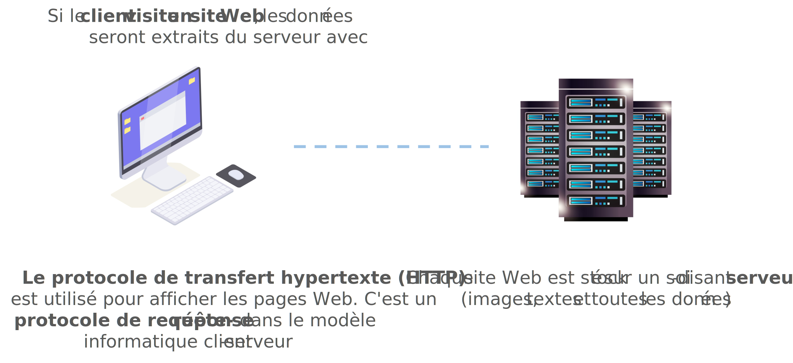
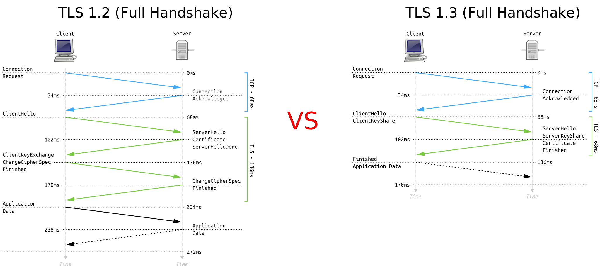

Protocoles HTTP et TLS

Le problème avec le HTTP standard est qu'il n'utilise aucun algorithme de cryptage lié à la cryptographie, donc toutes les informations sont envoyées au format texte brut (sans cryptage), noms d'utilisateur, les mots de passe et les informations relatives aux cartes de crédit sont publics. C'est pourquoi nous avons besoin d'approches plus sécurisées et c'est exactement pourquoi HTTPS a vu le jour.
HTTPS est Secure Hypertext Transfer Protocol il crypte les données récupérées par HTTP. Il existe plusieurs approches liées à la cryptographie à clé publique et à clé privée qu'il prend en charge (RSA, ECC, AES, DES etc.)
HTTPS utilise des protocoles pour assurer la sécurité des données : SSL et TLS. SSL signifie Secure Socket Layer. Et n'est plus sécurisé, c'est pourquoi en 1999 il a été mis à jour pour devenir Transport Layer Security (TLS).
